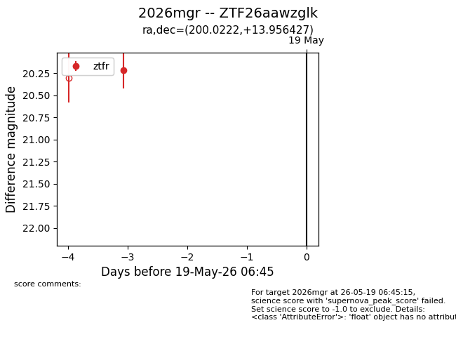
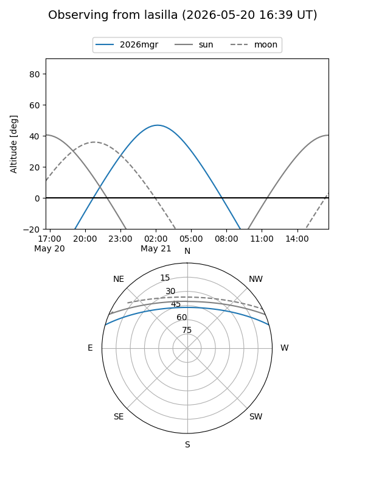
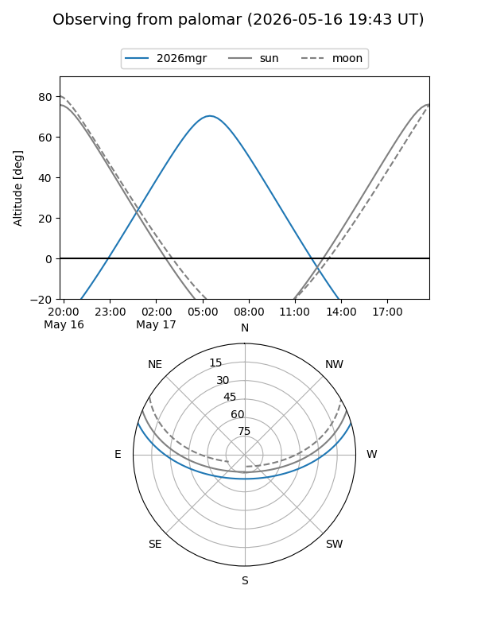
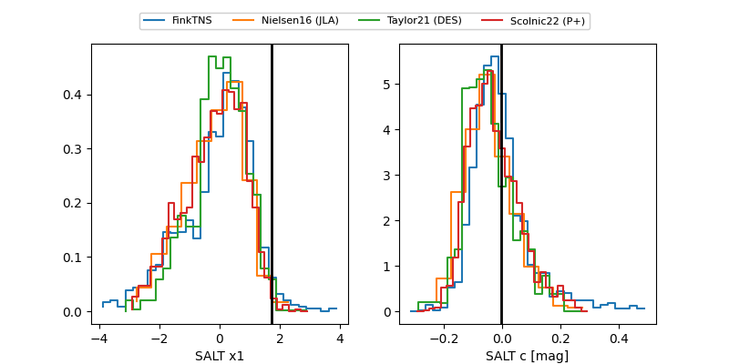

2026mgr
Target 2026mgr at 2026-05-19 06:46
Aliases and brokers:
FINK: link
Lasair: link
ALeRCE: link
TNS: link
YSE: link
alt names
ZTF26aawzglk (ztf,fink_ztf)
2026mgr (tns,yse)
Coordinates:
equatorial (ra, dec) = 200.0222,+13.95643
equatorial (HMS+DMS) = 13:20:05.33,+13:57:23.14
galactic (l, b) = (331.2656,+75.22857)
Flags:
Photometry:
last ztfr=20.22
1 ztfr detections
Lightcurve

Visibility


Additional plots
